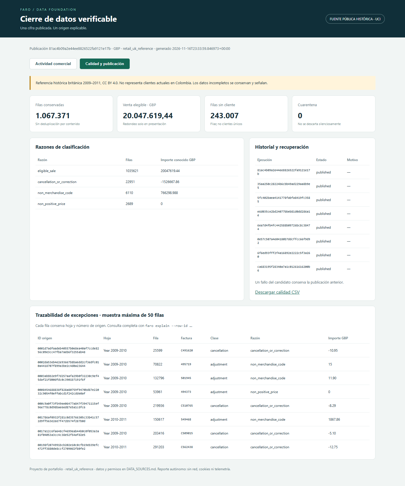

Which sales figures are ready to use?
I built a pipeline that separates sales, cancellations and adjustments, checks the totals and flags missing data for the finance team.
The totals matched an independent calculation across 1,798 groups by date and transaction type. Of 1,067,371 rows, 243,007 lacked a customer ID, so the close was published as provisional.